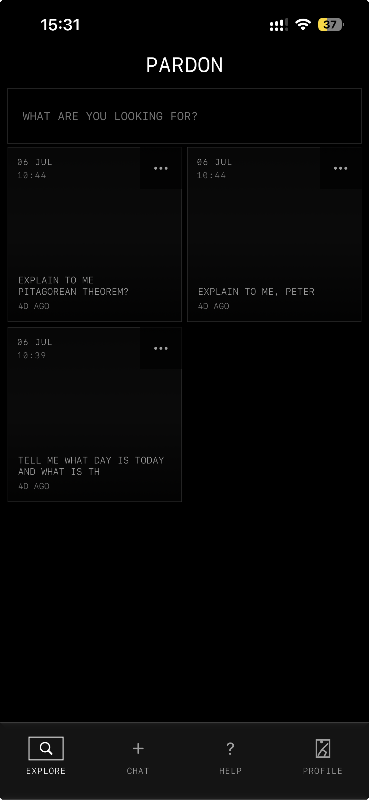
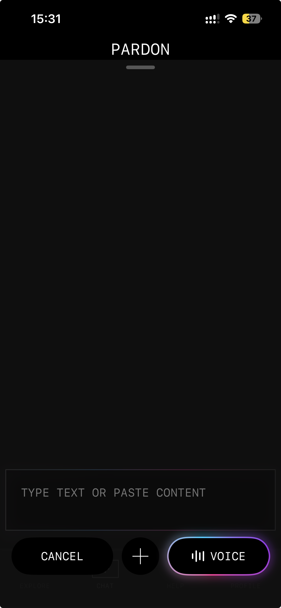
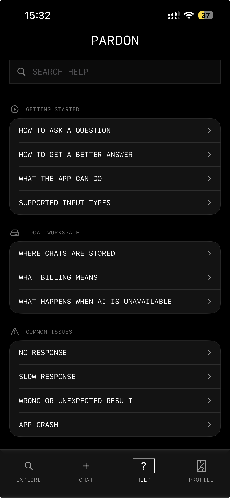
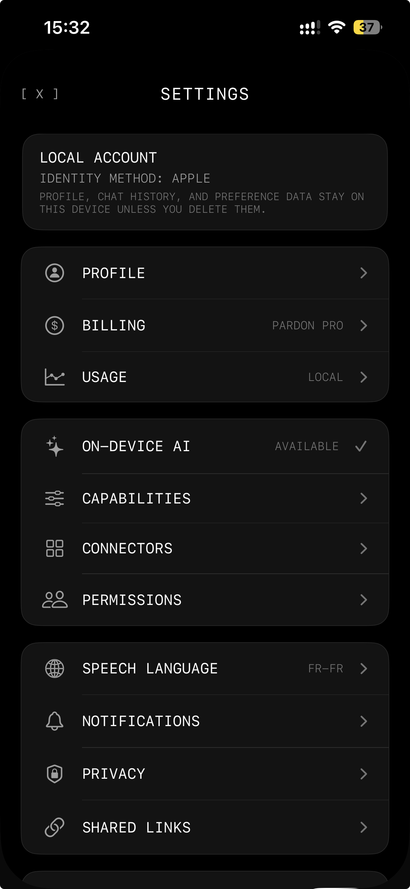

Pardon
A private, local-first AI assistant for iPhone: conversations are stored on the device, and text, voice and files enter through one direct interface.
INSTALL ON IPHONE VIA TESTFLIGHT
01 — THE PREMISE
An assistant should not require surrendering its history.
Pardon treats the phone as the place where the person’s conversations belong. Chats, profile information and preferences stay in local storage. When Apple’s on-device model is available, the assistant uses it directly; when it is not, the interface explains the state and remains usable.
The purpose is not a generic chat window. It is a mobile tool that respects the boundaries of the device it lives on.


02 — THE INTERFACE
One entry point, many kinds of input.
The composer accepts a typed thought, live dictation, a photo, video or document without changing the underlying interaction. Speech reveals partial transcription while speaking; searches, renaming and deletion keep the local history understandable rather than hidden.
Every system limitation has a corresponding interface state: permissions, model availability and context limits are made explicit instead of appearing as a silent failure.
